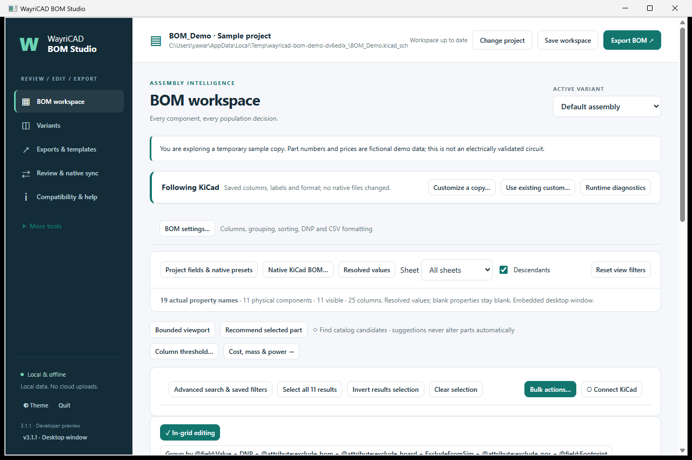
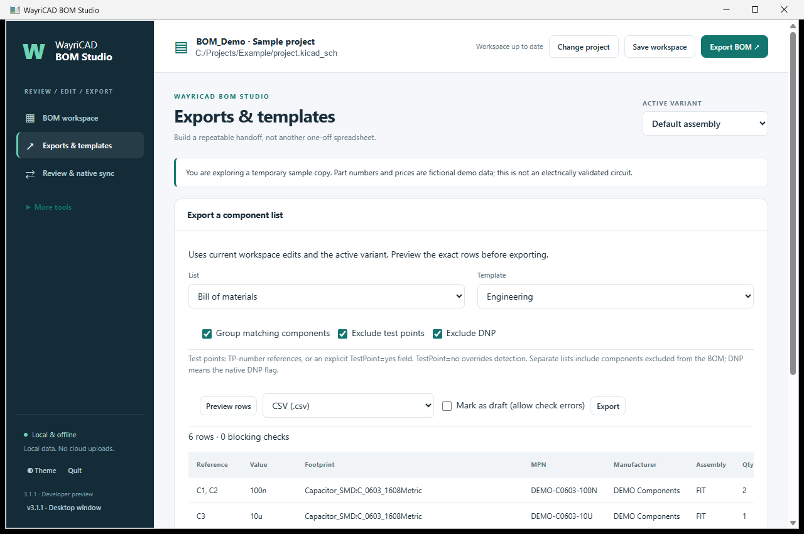
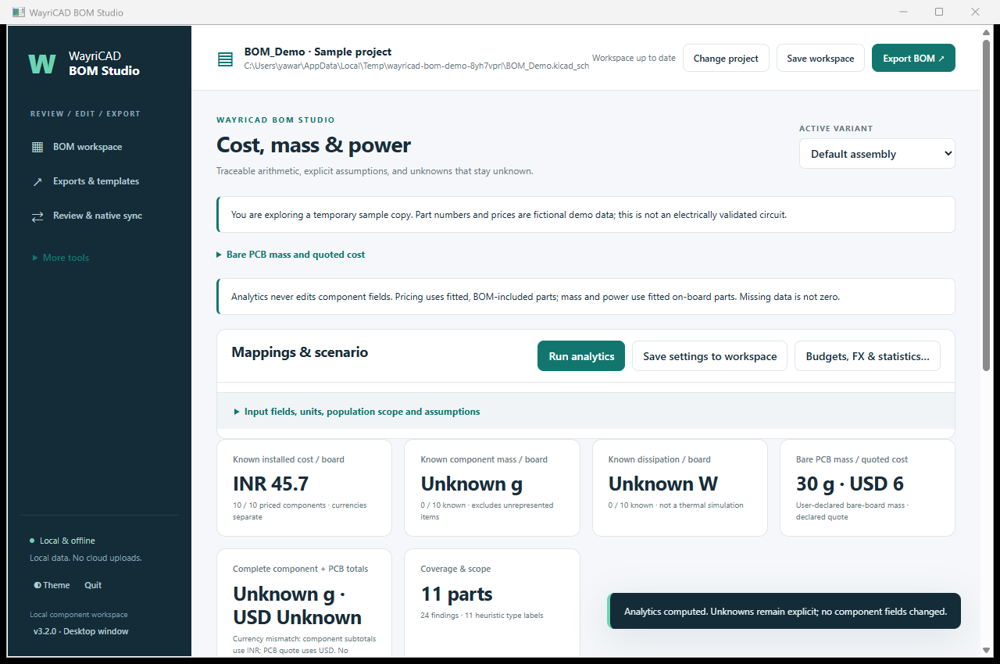

Version 3.1.1 · Local desktop interface · KiCad 10+

.wayricad-bom.json sidecar and support Undo.The three main views are BOM workspace, Exports & templates, and Review & native sync. Variants and help are under More tools. Expand More tools for catalogues, sourcing, checks, analytics and automation.

In Exports & templates select BOM, Test points only, or DNP only; choose a saved template and grouped or individual rows. BOM defaults exclude DNP and test points. Preview rows uses staged edits. Separate lists include BOM-excluded components. TP-number references or TestPoint=yes identify test points; TestPoint=no overrides detection. Bulk edit this field for custom references. DNP uses the native flag.
Choose the output format and Export. Blocking checks require correction or an explicitly marked draft. Expand Templates, native exports and advanced settings for the complete template editor. Quick conditions last for this session and do not rewrite saved templates.
Native exports read the saved KiCad files and use the selected BOM settings. Staged component edits are not included automatically. Use Review & native sync to review and apply backed-up source changes, or export staged data with a custom workspace template.
Install the PCM ZIP intact through KiCad’s Plugin and Content Manager. The toolbar launcher selects an installed KiCad Python runtime; its lightweight dependencies use a private WayriCAD cache. For a large saved project, a native loading window shows activity while BOM Studio reads it; the desktop window then shows a loading message until its local workspace is ready. First-time dependency setup occurs before the GUI runtime is available and can take longer without a loading window. Windows also requires WebView2; Linux requires wxGTK WebKit support. If the embedded runtime is unavailable, the same local interface opens in your installed browser. Use Quit to stop its local service. All interface files are bundled locally.
Try python cli.py gui --demo or python cli.py --help. Native settings can be changed using bom-format configure PROJECT --config settings.json.
KiCad 11 uses capability checks; live acceptance is not claimed. See README for details.
Use Cost & mass beside BOM settings. Map UnitPrice, Currency and Mass fields, then set build quantity and mass units. Editing and bulk editing stay in BOM workspace. DNP parts are excluded; the physical-scope checkbox controls fitted BOM-excluded mass. Missing component data remains unknown.

Expand Bare PCB mass and quoted cost for a declared mass, or explicit area, dielectric thickness/density, total copper thickness, weighted coverage and copper density. Dielectric thickness excludes copper. Cost uses a supplier unit quote plus setup divided by quote quantity, with explicit currency; blank quantity uses build quantity. No market price is inferred. Enter zero setup explicitly when none. Complete assembly totals require complete component coverage and matching currency.
Save reports in project writes JSON, HTML, summary CSV and per-component CSV to a unique reports/wayricad-bom folder beside the originating project. Earlier reports and design files stay intact. Save settings and Save workspace retain assumptions. Do not double-count a bare-PCB component; solder, plating and unrepresented hardware are outside the estimate.
Use Shared parts library in BOM workspace to create or attach a remembered catalogue, review project asset capture, share templates, and review native global library registration. Alt (plugin only) stores a candidate per component and variant without changing native parts or exports. Search by keywords or bounded regex, then review differences and unknown specifications. Complete shared-library guide.
In Cost, mass & power, map any KiCad fields to cost, currency, mass, operating dissipation and component type. Export mapping template / Import mapping template shares an analytics JSON profile; Save settings then Save workspace retains it. Native fields and BOM export templates are unchanged. Operating dissipation is separate from rated power.
Run analytics and open Components & area for passive/active/other totals, individual R/L/C and combined RLC breakdowns, histograms and cost insights. Currencies stay separate. Missing observations show coverage rather than zero. Power/area uses only components with both known power and area.
Geometry comes from the saved PCB: placement-side courtyard area and numbered copper pad area minus supported drill holes. Pad area is a nominal contact proxy, not measured solder contact. Unsupported or potentially overlapping geometry remains unknown. These densities do not predict temperature. Expand geometry coverage for reasons and source details. Download the families table, HTML charts or full JSON/XLSX; Save reports in project includes the analysis in HTML/JSON. Detailed usage and limitations.
Install the WayriCAD CLI wheel alongside the GUI plugins. In the saved project folder, run wayricad jobs init --preset inventory, then wayricad jobs run --keep-going. Reports, logs and a linked HTML summary go into a fresh reports/wayricad/ run folder. Inventory lists available nets and paths; choose the electrical preset and explicit terminals for numerical analysis.
Use wayricad jobs jobset --output analysis.kicad_jobset to create a native KiCad jobset. Use --merge existing.kicad_jobset --position 1 to insert into an existing sequence, writing a new file. Open the resulting jobset in KiCad's Jobsets manager and run it. Nonzero tool exits and missing reports fail the sequence; successful execution is not engineering approval. Complete setup, presets and automation guide.